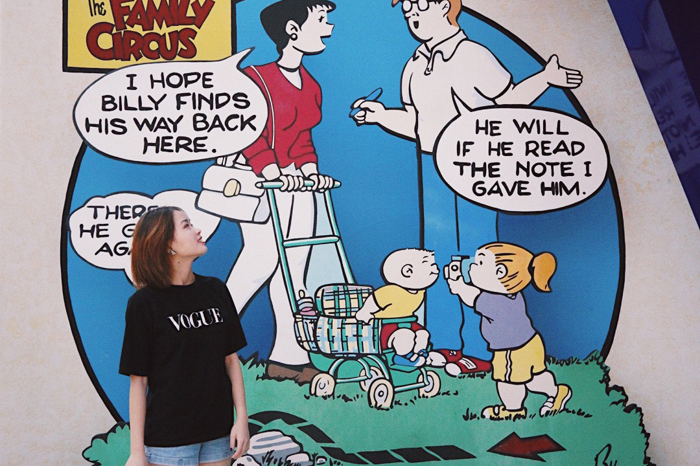
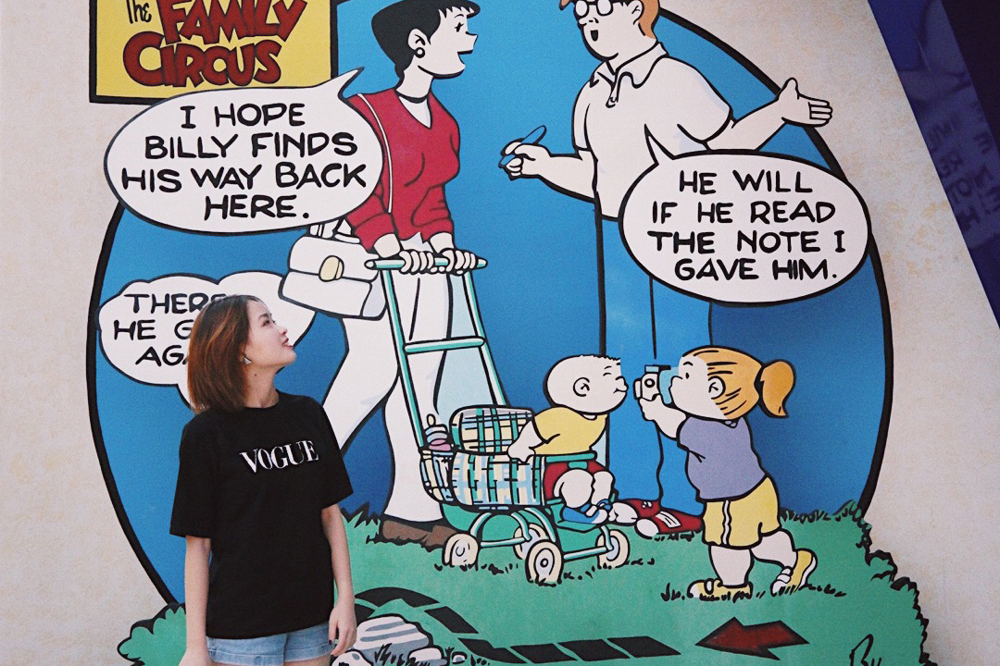

Ran Huan's Website 1.0.1
This website is created by Ran Huan for J4502.
It is a simple website which is to display some practices.
If at first you don't succeed, call it version 1.0.
This website is created by Ran Huan for J4502.
It is a simple website which is to display some practices.
If at first you don't succeed, call it version 1.0.
